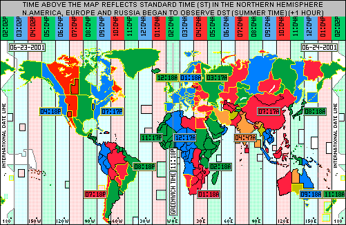

Клімат
Віддаленість України від океанів, континентальність Євразії та переважно рівнинний рельєф визначають клімат країни як помірно-континентальний, що поступово змінюється із заходу на схід. Зі збільшенням континентальності літо стає спекотнішим, зима холоднішою, а кількість опадів меншою. Такі комфортні кліматичні умови дають людям можливість насолоджуватися пляжним відпочинком на Чорному морі влітку і кататися на лижах на гірськолижних курортах засніжених Карпат взимку. Найнижчі середні температури припадають на січень - лютий: -7, -8°C на північному сході країни і в гірських районах. У березні спостерігається підвищення температури повітря. Найвищі середньодобові температури зафіксовані в липні: +20, +25°С, а середньомісячні - +17, +19°С на півночі та північному заході, +22, +30°С на півдні України. Розподіл опадів на території України має тенденцію до зменшення з півночі та північного заходу на південь та південний схід.

Населення
Станом на 1 лютого 2015 року, за даними Держстату, чисельність населення України становила 42 741 248 осіб постійного населення та 42 910 885 осіб наявного населення.На сьогодні більшість населення країни становлять українці. Другою за чисельністю нацією є росіяни (їхня частка перевищує 17,28% населення). Відносно великими етнічними групами населення України є білоруси (0,57%), молдавани (0,54%), кримські татари (0,51%), болгари (0,42%), угорці (0,32%), румуни (0,31%), поляки (0,30%) та інші. Середня очікувана тривалість життя для чоловіків становить - 65 років, для жінок - 74 роки.
Релігія
Основною релігією в Україні є християнство. Більшість віруючих - християни, більшість з яких належать до православних церков. Католицька церква представлена Українською греко-католицькою церквою і в основному поширена в Галичині (Тернопільська, Львівська та Івано-Франківська області). Крім того, в Україні існують протестантизм, іудаїзм та іслам.

Часовий пояс
Час в Україні визначається як UTC+02:00, а влітку як UTC+03:00. Місцевий час називається київським і є частиною східноєвропейського часу. Перехід на літній час відбувається в останній тиждень березня о 03:00, коли час переводиться на годину вперед, і в останній тиждень жовтня о 04:00, коли час переводиться на годину назад; таким чином, годинник в Україні завжди на 1 годину випереджає годинник у Центральній Європі. Майже 95% території України знаходиться у східноєвропейському часовому поясі, за винятком її західної та східної околиць. Невелика частина Закарпатської області розташована в центральноєвропейському часовому поясі, тоді як Луганська область, більша частина Донецької області та частина Харківської області географічно розташовані в далекосхідному часовому поясі. Проте вся країна офіційно дотримується східноєвропейського часу. Щорічно в Україні вводиться літній час: в ніч на останню неділю березня годинникову стрілку переводять на одну годину вперед. Це дає можливість повніше використовувати світлу частину доби та економити електроенергію. У ніч на останню неділю жовтня стрілки годинника повертають на годину назад, відновлюючи часовий пояс.
Транспорт
В Україні розвинені майже всі види сучасного транспорту: залізничний, автомобільний, морський, річковий, повітряний. Залізнична мережа країни поділяється на шість доріг (напрямків): Донецька, Львівська, Одеська, Південна, Південно-Західна та Придніпровська. Максимальна швидкість пасажирських поїздів - 160 км/год. Загальна довжина колій становить 22473 км. З України можна легко дістатися практично до будь-якої країни Центральної та Західної Європи, а через територію Білорусі - до країн Балтії. Автомобільний транспорт значно переважає над іншими видами. Через Україну проходять 23 міжнародні дороги. Загальна протяжність автомобільних доріг становить 169 491 км. Основні автомагістралі країни: Київ - Львів, Київ - Харків, Київ - Брест, Дніпро - Нікополь, Київ - Одеса, Одеса - Миколаїв, Херсон, Біла Церква - Вінниця, Хмельницький, Дніпро - Запоріжжя. Найбільша річка України - Дніпро - судноплавна. Україна має вихід до двох морів - Азовського та Чорного. Морський транспорт здійснює перевезення вантажів і пасажирів у Чорноморсько-Азовському басейні. Вітряний транспорт також розвинений, в Україні налічується понад 20 аеропортів. Деякі міста України (Київ, Одеса, Львів, Харків) мають по два аеропорти. Головними повітряними воротами країни є аеропорт "Бориспіль".

Кухня
У багатьох людей українська кухня міцно асоціюється з певними стравами. Які ж вони?
1. Для всіх жителів України, а також для всіх туристів відомо, що головною традиційною стравою або “делікатесом” України, так би мовити, є сало і це правда. Цей продукт тут шанують і люблять. Його вживають у будь-якому вигляді: свіже для смаження, солоне для вживання в їжу, як основну страву і як закуску. Українська традиційна кухня2. Борщ. Це супова страва і дуже особлива. Вважається складним у приготуванні, оскільки містить понад 20 інгредієнтів, основними з яких є капуста, буряк, картопля та кісткова юшка (бульйон). Справжній український борщ зможе приготувати тільки український кухар, оскільки не головне знати кількість компонентів і весь процес приготування, головне вміння - "на око" визначити наваристість бульйону, готовність обсмажених овочів і густоту страви. 3. Хліб в українській кухні має дуже важливе значення. Зазвичай хлібини замішували із суміші пшеничного та житнього борошна. Тісто готували на спеціальній заквасці, а випікали в українській печі. Паляниці виходили рум'яними, ароматними, з хрусткою скоринкою. Виріб з чистого пшеничного борошна називався паляницею і вважався святковою стравою. В інші дні пекли ячмінний хліб, а також страви з прісного тіста, наприклад, вареники. Їх подають як основну страву або як гарнір до м'яса. Говорячи про хлібобулочні вироби, не можна не згадати всім відомі часникові пампушки, без яких неможливо уявити борщ. На десерт подають пісочне тісто або пиріжки. 4. Останніми, але не менш важливими в цьому списку є вареники. За принципом виготовлення процес нагадує приготування кавказьких мантів і російських пельменів, з тією різницею, що в якості начинки використовуються різні овочі і ягоди в будь-якому вигляді. Найчастіше в кафе і ресторанах в меню можна зустріти вареники з картоплею і цибулею в цибулевій піджарці на вершковому маслі, вареники з сиром і сметаною, вареники з вишнею і т.д.

Атракції
Україна - дивовижний край, завжди гостинний і привітний. Кожен куточок цієї неосяжної землі з радістю відкриє туристам свою красу. В останні роки відпочинок в Україні стає все більш популярним, і це зовсім не дивно - скільки чудес таїть в собі ця славна земля! Здається, тут є абсолютно все, що може зацікавити мандрівника. І це дійсно так! відпочинок в Україні, то у вас буде унікальна можливість поповнити свої яскраві враження від перегляду культурно-історичних пам'яток, відчути історію, закарбовану в архітектурних формах. Пам'ятки України багаті на різноманітність, кожен регіон може похвалитися власними культурними цінностями та незабутнім колоритом. Пам'ятки України можна знайти в кожному місті. Якщо ви пла
Країна багата на природні, архітектурні пам'ятки, заповідники.
Замки і фортеці України

В Україні є багато історичних пам'яток, таких як замки. Сотні туристів щороку активно цікавляться замковим туризмом. Тут є середньовічні палаци та фортеці, наприклад, Старий замок у Кам'янці-Подільському, Білгород-Дністровська фортеця, Олеський та напівзруйнований Невицький замки та багато інших унікальних пам'яток архітектури. Згодом, після середньовіччя, в Україні почали зводити більш розкішні будівлі. До таких споруд відносяться: Замок генерал-майора Попова в Запорізькій області.